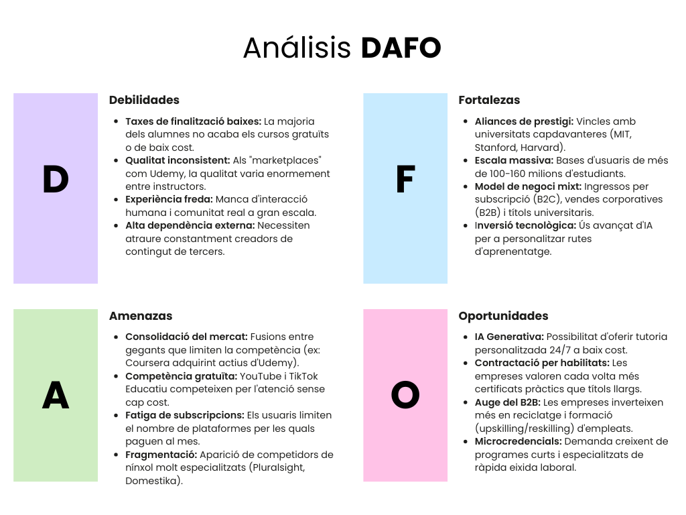
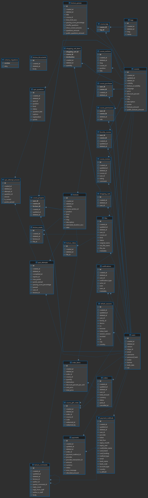
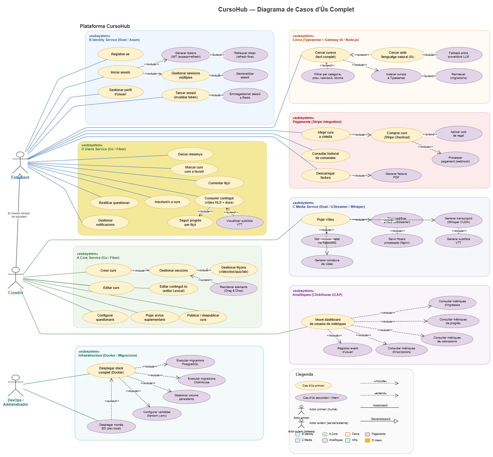
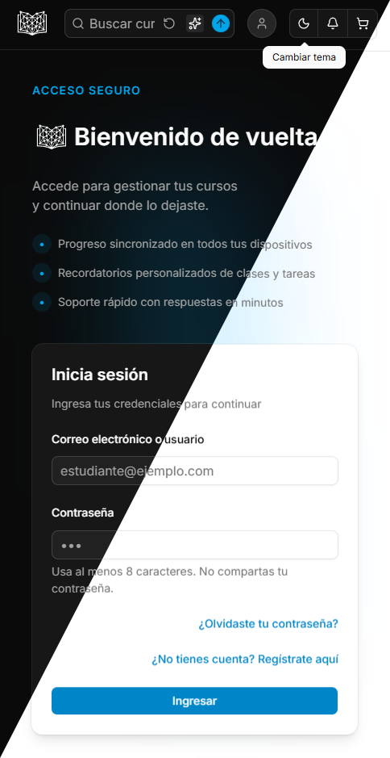
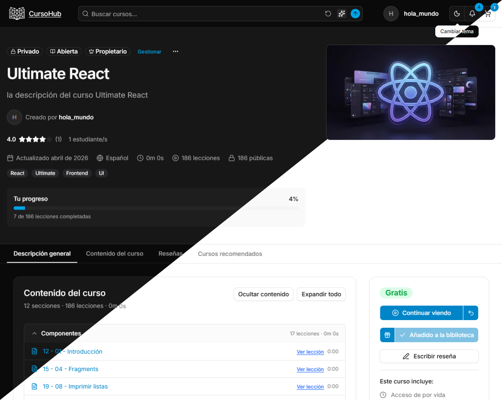
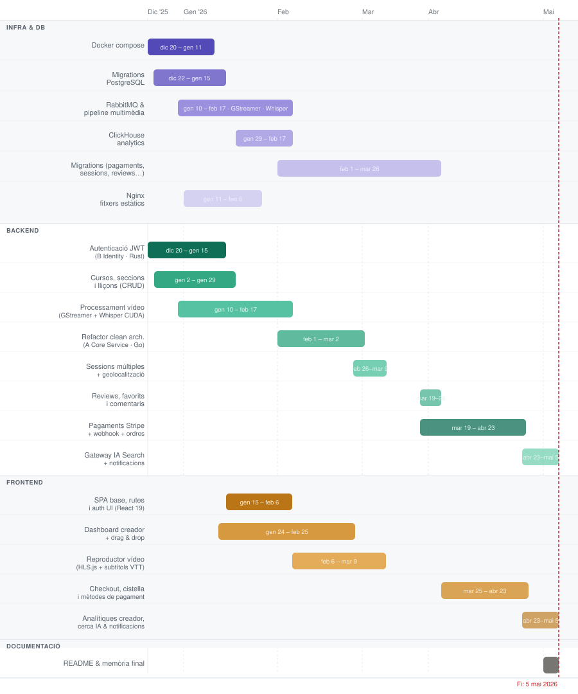

ODS 4 — Educació de qualitat: accés a formació contínua.

ODS 8 — Treball decent i creixement econòmic: impuls de competències professionals.

ODS 10 — Reducció de desigualtats: facilitant accés remot al coneixement.
Plataforma distribuïda de formació online amb arquitectura de microserveis, processament multimèdia asíncron, cerca amb IA i integració de pagaments.
CursoHub és una plataforma digital on creadors puguen publicar cursos i estudiants puguen adquirir-los, consumir contingut multimèdia i fer seguiment del seu aprenentatge.
Punts clau:
Generals:
Específics:
Segmentació:
Competència:

El projecte s'alinea amb:
ODS 4 — Educació de qualitat: accés a formació contínua.
ODS 8 — Treball decent i creixement econòmic: impuls de competències professionals.
ODS 10 — Reducció de desigualtats: facilitant accés remot al coneixement.
Valors del projecte: Accessibilitat · Qualitat · Innovació · Millora contínua
Relacions principals:



La plataforma suporta mode clar i fosc amb coherència visual i contrast adequat.
Comparativa clar / fosc


La plataforma utilitza una paleta basada en Shadcn UI amb colors en format OKLCH per a una millor percepció.
Mode Clar (:root)
| Mostra | Variable | Color (OKLCH) | Descripció |
|---|---|---|---|
 |
--background |
oklch(1 0 0) |
Fons de la pàgina |
 |
--foreground |
oklch(0.145 0 0) |
Text principal |
 |
--primary |
oklch(0.59 0.14 242) |
Color principal d'acció |
 |
--secondary |
oklch(0.967 0.001 286.375) |
Color secundari |
 |
--accent |
oklch(0.97 0 0) |
Color de ressaltat |
 |
--destructive |
oklch(0.58 0.22 27) |
Error o accions destructives |
 |
--border |
oklch(0.922 0 0) |
Vores dels elements |
Mode Fosc (.dark)
| Mostra | Variable | Color (OKLCH) | Descripció |
|---|---|---|---|
|
--background |
oklch(0.145 0 0) |
Fons en mode fosc |
 |
--foreground |
oklch(0.985 0 0) |
Text principal en mode fosc |
 |
--primary |
oklch(0.68 0.15 237) |
Color principal d'acció |
 |
--secondary |
oklch(0.274 0.006 286.033) |
Color secundari |
 |
--accent |
oklch(0.371 0 0) |
Color de ressaltat |
 |
--destructive |
oklch(0.704 0.191 22.216) |
Error o accions destructives |
 |
--border |
oklch(1 0 0 / 10%) |
Vores dels elements |
Stack tecnològic complet de la plataforma:
| Àrea | Servei | Tecnologies | Ports | Rol |
|---|---|---|---|---|
| Backend | A Core service | Go 1.25, Fiber, GORM, Stripe | 3000 | Servei principal de negoci: cursos, compres, cerca, analítiques |
| Backend | B Identity service | Rust 1.89, Axum, Tokio, SeaORM | 3001 | Autenticació, sessions, gestió de perfil |
| Backend | C Media service | Rust 1.89, GStreamer, Whisper (CUDA) | — | Processament multimèdia asíncron |
| Backend | Gateway IA search | Node.js, TypeScript, Express | 3003 | Gateway IA amb fallback entre proveïdors NL |
| Backend | Migrations | TypeScript, migrate | — | Migracions PostgreSQL/ClickHouse i Typesense |
| Frontend | Web SPA | React 19, Vite, Tailwind, Shadcn UI | 5173 | Interfície d'usuari completa |
| Desplegament | Docker | Docker | — | Orquestra serveis, BD i persistència |
| BD | PostgreSQL | SQL relacional | 5432 | Dades transaccionals principals |
| BD | ClickHouse | OLAP columnar | 8123 | Analítica d'events i mètriques |
| BD | Redis | Key-value en memòria | 6379 | Cache, sessions i tokens |
| Cerca | Typesense | Motor de cerca | 8108 | Indexació i cerca avançada de cursos |
| Missatgeria | RabbitMQ | Broker AMQP | 5672 / 15672 | Comunicació asíncrona entre serveis |
| Fitxers estàtics | Nginx | Servidor web | 8080 | Fitxers multimèdia processats |
L'orquestració es fa amb Docker. Dos fitxers permeten arrancar el stack complet o només les bases de dades per a desenvolupament local.
L'arquitectura backend es basa en quatre serveis independents comunicats via HTTP (S2S) i missatgeria asíncrona (RabbitMQ):
| Servei | Llenguatge / Framework | Responsabilitat principal |
|---|---|---|
| A Core Service | Go 1.25, Fiber, GORM | Lògica de negoci, cursos, pagaments, cerca, analítiques |
| B Identity Service | Rust 1.89, Axum, SeaORM | Autenticació, sessions, JWT |
| C Media Service | Rust 1.89, GStreamer, Whisper | Processament asíncron de vídeo i àudio |
| Gateway IA Search | Node.js, TypeScript, Express | Cerca en llenguatge natural amb LLMs |
Bases de dades: PostgreSQL · ClickHouse · Redis · Typesense
Aplicació SPA construida amb React 19, Vite i components de Shadcn UI.
| Categoria | Llibreria |
|---|---|
| Components UI | Shadcn UI, Tailwind CSS |
| Formularis | React Hook Form + Zod |
| Dades | React Query, Axios |
| Editor de text | Lexical (Shadcn UI) |
| Gràfics | Recharts (Shadcn UI) |
| Vídeo | HLS.js + subtítols VTT |
| Drag & Drop | dnd-kit |
| Pagament | Stripe JS |
| Temes | next-themes (Shadcn UI) |
L'estil visual es basa en el sistema de disseny de Shadcn UI amb components accessibles i altament personalitzables.

L'orquestració es fa amb dos fitxers Docker Compose:
| Fitxer | Propòsit |
|---|---|
docker-compose.yaml |
Stack complet: serveis + bases de dades |
docker-compose-databases.yaml |
Només bases de dades (per a dev local) |
Persistència de dades (volums locals):
./dbs/
├── postgres_data/ # Dades PostgreSQL
├── redis_data/ # Dades Redis
├── clickhouse/ # Dades i logs ClickHouse
├── rmq_data/ # Dades RabbitMQ
└── typesense-data/ # Índex Typesense
Iniciar el projecte:
# Stack complet
docker compose up -d
# Només bases de dades (per a dev local)
docker compose -f docker-compose-databases.yaml up -d
Variables d'entorn:
| Fitxer | Servei |
|---|---|
backend/A_core_service/.env.* |
Core service |
backend/B_identity_service/.env.* |
Identity service |
backend/gateway_IA_search/.env.* |
Gateway IA |
frontend/.env.* |
Frontend |
Aplicació SPA amb React 19. Totes les rutes protegides requereixen autenticació JWT activa. Fluxe peticions: Aggregator
Mode clar i fosc: implementat amb next-themes i variables CSS OKLCH. El canvi de tema és instantani i persistent entre sessions.
Responsive: disseny adaptatiu per a mòbil i escriptori mitjançant les utilitats de Tailwind CSS.
Components: tots els elements interactius (formularis, modals, taules, gràfics) utilitzen Shadcn UI amb accessibilitat integrada (ARIA, navegació per teclat).
Feedback visual: indicadors de càrrega, missatges d'error i confirmació en totes les accions de l'usuari gestionats amb React Query i React Hook Form + Zod.
| Prioritat | Millora |
|---|---|
| Alta | Internacionalització (i18n) — castellà, anglès |
| Mitjana | Asistent especialitzat en curs actual |
| Mitjana | Aplicació mòbil nativa (React Native) |
| Mitjana | Més analítica per creadors (embut de conversió, heatmaps) |
| Baixa | Integració amb certificacions externes |
| Baixa | Sistema de cursos en directe (streaming) |
El projecte ha permès consolidar competències en planificació de sistemes distribuïts, comunicació tècnica, resolució de problemes complexos i treball orientat a producte. La implementació de múltiples tecnologies en paral·lel (Go, Rust, Node.js, React) ha reforçat la capacitat d'adaptar-se a entorns políglottes.
A nivell tècnic, s'ha validat una arquitectura modular capaç de créixer, amb separació clara de responsabilitats entre:
La combinació de PostgreSQL per a dades transaccionals, ClickHouse per a analítiques i Typesense per a cerca demostra que una arquitectura poliglota de bases de dades és viable i eficient per a plataformes d'aquest tipus.